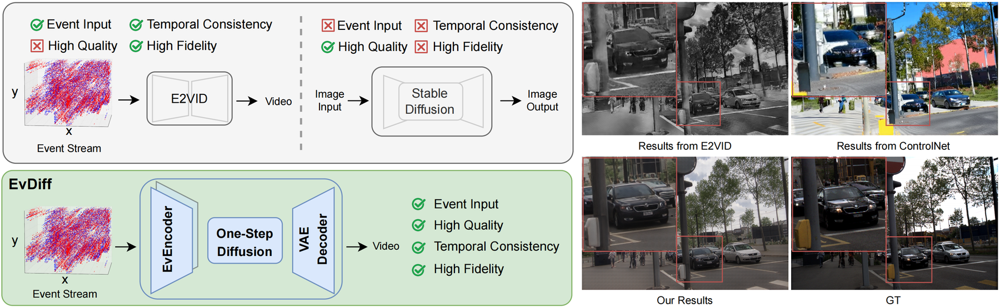
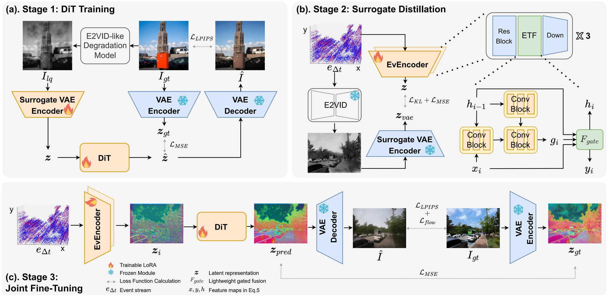
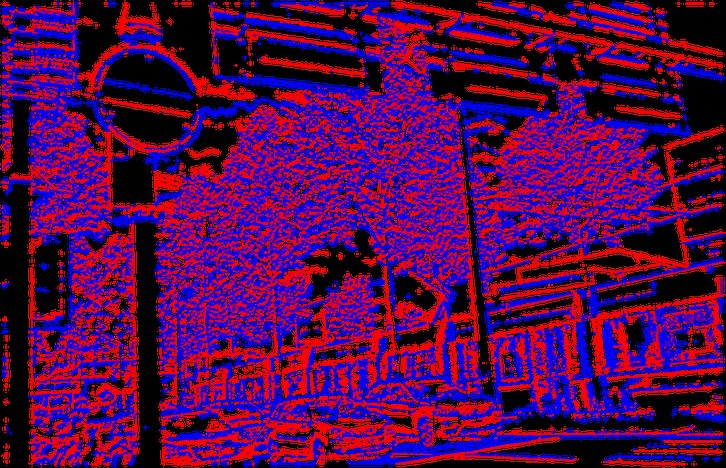
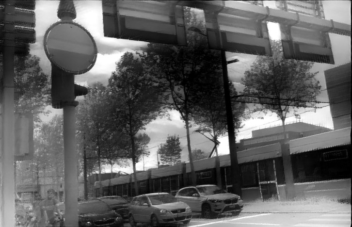
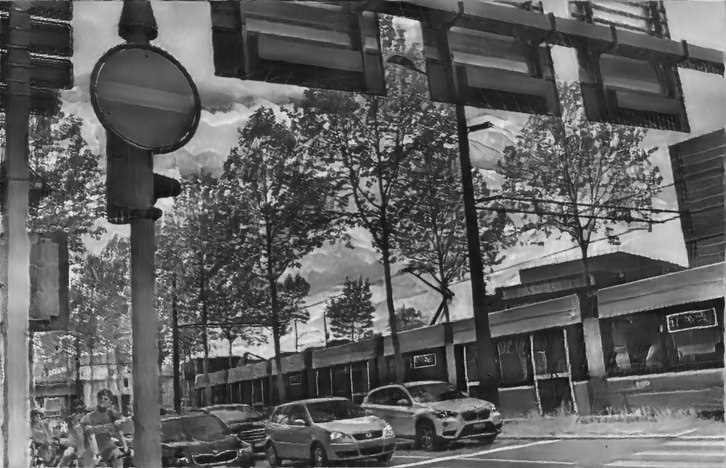
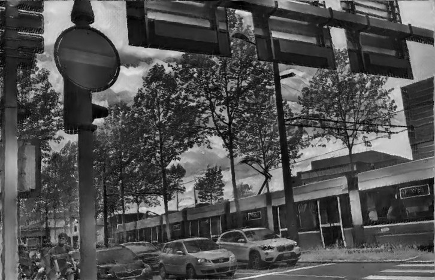
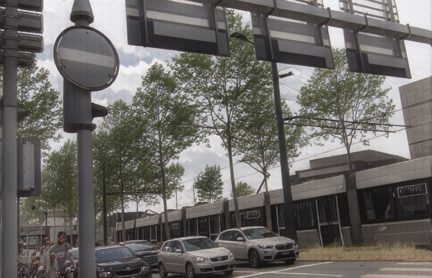
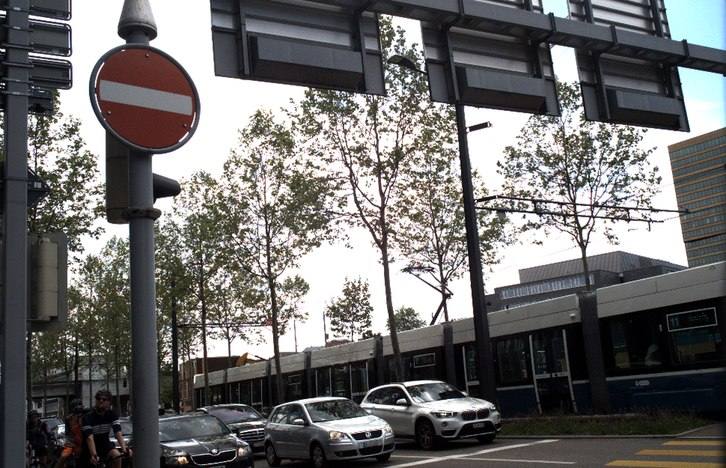
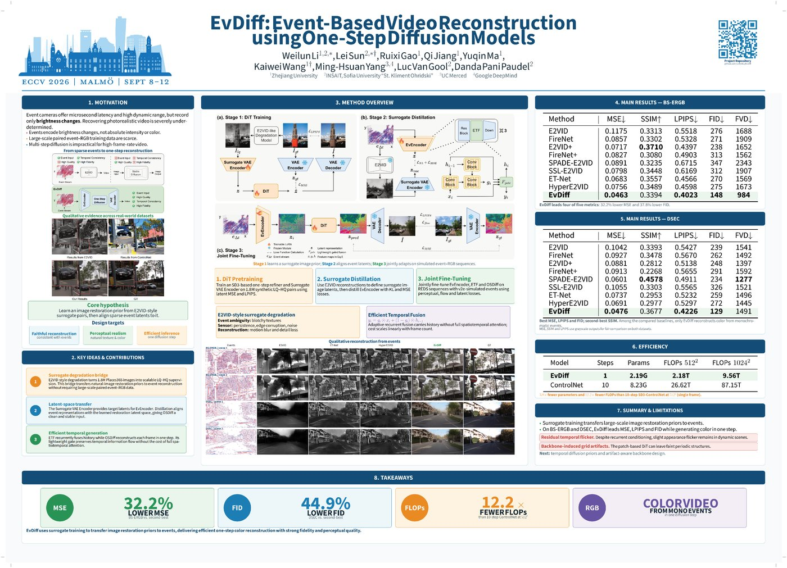

1Zhejiang University2INSAIT, Sofia University “St. Kliment Ohridski”3UC Merced4Google DeepMind
* Equal contribution — work mainly done during Weilun Li’s internship at INSAIT. † Corresponding authors.

01 — Abstract
As neuromorphic sensors, event cameras asynchronously record changes in brightness as streams of sparse events with the advantages of high temporal resolution and high dynamic range. Reconstructing intensity images from events is a highly ill-posed task due to the inherent ambiguity of absolute brightness. Early methods generally follow an end-to-end regression paradigm, directly mapping events to intensity frames in a deterministic manner. While effective to some extent, these approaches often yield perceptually inferior results and struggle to scale up in model capacity and training data. In this work, we propose EvDiff, an event-based diffusion model that follows a surrogate training framework to produce high-quality videos. To reduce the high computational cost of high-frame-rate video generation, we design an event-based diffusion model that performs only a single forward diffusion step, equipped with a temporally consistent encoder. Furthermore, our novel surrogate training framework eliminates the dependence on paired event–image datasets, allowing the model to leverage large-scale image datasets for higher capacity. The proposed EvDiff is capable of generating high-quality colorful videos solely from monochromatic event streams. Experiments on real-world datasets demonstrate that our method strikes a sweet spot between fidelity and realism, outperforming existing approaches on both pixel-level and perceptual metrics.
02 — Video results
03 — Method
EvDiff is built on SD3 and trained in three stages. The core idea: learn an image restoration prior from surrogate pairs, then align sparse event latents to that prior — so large-scale image data can supervise event-to-video reconstruction without any paired event–RGB recording.

Train an SD3-based one-step refiner and a Surrogate VAE Encoder on 1.8M synthetic LQ–HQ pairs from Places365, using latent MSE and LPIPS.
Use E2VID reconstructions to define surrogate image latents, then distill the EvEncoder with KL and MSE losses — aligning event representations with the restoration latent space.
Jointly fine-tune EvEncoder, ETF and OSDiff on REDS sequences with v2e-simulated events, using perceptual, optical-flow and latent losses.
04 — Results
| Method | MSE ↓ | SSIM ↑ | LPIPS ↓ | FID ↓ | FVD ↓ |
|---|---|---|---|---|---|
| E2VID | 0.1175 | 0.3313 | 0.5518 | 276 | 1688 |
| FireNet | 0.0857 | 0.3302 | 0.5328 | 271 | 1909 |
| E2VID+ | 0.0717 | 0.3710 | 0.4397 | 238 | 1652 |
| FireNet+ | 0.0827 | 0.3080 | 0.4903 | 313 | 1562 |
| SPADE-E2VID | 0.0891 | 0.3235 | 0.6715 | 347 | 2343 |
| SSL-E2VID | 0.0798 | 0.3448 | 0.6169 | 312 | 1907 |
| ET-Net | 0.0683 | 0.3557 | 0.4566 | 270 | 1569 |
| HyperE2VID | 0.0756 | 0.3489 | 0.4598 | 275 | 1673 |
| EvDiff (ours) | 0.0463 | 0.3394 | 0.4023 | 148 | 984 |
EvDiff leads four of five metrics: 32.2% lower MSE and 37.8% lower FID than the second-best method.
| Method | MSE ↓ | SSIM ↑ | LPIPS ↓ | FID ↓ | FVD ↓ |
|---|---|---|---|---|---|
| E2VID | 0.1042 | 0.3393 | 0.5427 | 239 | 1541 |
| FireNet | 0.0927 | 0.3478 | 0.5670 | 262 | 1492 |
| E2VID+ | 0.0881 | 0.2812 | 0.5138 | 248 | 1397 |
| FireNet+ | 0.0913 | 0.2268 | 0.5655 | 291 | 1592 |
| SPADE-E2VID | 0.0601 | 0.4578 | 0.4911 | 234 | 1277 |
| SSL-E2VID | 0.1055 | 0.3303 | 0.5565 | 326 | 1521 |
| ET-Net | 0.0737 | 0.2953 | 0.5232 | 259 | 1496 |
| HyperE2VID | 0.0691 | 0.2977 | 0.5297 | 272 | 1445 |
| EvDiff (ours) | 0.0476 | 0.3677 | 0.4226 | 129 | 1491 |
Best MSE, LPIPS and FID; second-best SSIM. MSE, SSIM and LPIPS use grayscale outputs for fair comparison on both datasets.






05 — Poster

The full poster summarizes motivation, the three-stage training pipeline, benchmark tables and efficiency analysis on a single sheet. Download the PDF ↗ (12.8 MB).
06 — Citation
@misc{li2025evdiffhighqualityvideo,
title = {EvDiff: High Quality Video with an Event Camera},
author = {Weilun Li and Lei Sun and Ruixi Gao and Qi Jiang and Yuqin Ma and
Kaiwei Wang and Ming-Hsuan Yang and Luc Van Gool and Danda Pani Paudel},
year = {2025},
eprint = {2511.17492},
archivePrefix= {arXiv},
primaryClass = {cs.CV},
url = {https://arxiv.org/abs/2511.17492}
}
This is the official BibTeX entry from the repository. The arXiv record currently carries an earlier title; it will be refreshed to the ECCV 2026 version — update this block then.